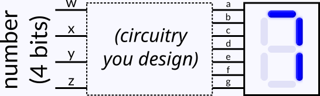

CMPT 328 — Activity 3.x
Seven-segment displays are used in some simple electronics (such as microwaves, digital clocks, etc.), frequently to show lengths of time and such. For example, below is a seven-segment display showing the digit 7:
In a seven-segment display component, there are seven input wires, each controlling whether one of the seven segments is illuminated. Your task in this activity is to determine a Boolean function for each of those seven input wires so that the display correctly shows each of the 10 digits, 0 through 9.

Specifically, you will have four Boolean inputs representing the four bits of the number (0000 for 0 through 1001 for 9). Using those, you will construct seven Boolean functions, one for each segment of the display, so that the display shows each digit correctly.
Start by filling out a truth table for what the seven-segment display should show for each digit. In this table, the four inputs (w, x, y, and z) are the four bits of the number — for example, the number 5 (0101 in binary) would be the row w=0, x=1, y=0, z=1. The seven outputs each represent one of the segments (labeled a through g) of the seven-segment display. The truth table has only 10 rows because these are the only rows we care about: it is assumed that we will never be passed a value greater than 9. (In other words, the omitted six rows would all be “don’t-cares.”)
Experiment with filling in the truth table and seeing which segments get illuminated as you put in ones. (Blanks are the same as zeros for purposes of this table.) Once you get the hang of it, work with your team on filling in the truth table until you are all satisfied with how each digit is displayed.
Now that you have a truth table for all seven segments, write Boolean functions to control each of the seven segments. These correspond to what circuitry would be connected to each of the seven-segment display’s seven inputs, and each can use the variables w, x, y, and z, being the four bits of the digit to display.
For each of the seven segments, decide as a team whether it would be better to use SoP _ _ _ + _ _ _ + _ _ _ or PoS (_ + _ + _)(_ + _ + _)(_ + _ + _) form, then write a function implementing the truth table you filled in above. Don’t worry about Karnaugh mapping it just yet; that’s the next step!
Use Karnaugh maps to derive optimal SoP or PoS functions, using as few logic gates (and hence transistors) as possible. Fill in the table below, which will show you how many transistors are used in total by your functions.
Since we don’t care what the seven-segment display would do for inputs greater than 9, you can (and should!) treat the six rows of the truth table corresponding to 10–16 as “don’t-care” values, allowed to be either 0 or 1, which can allow you to produce better (simpler) functions.